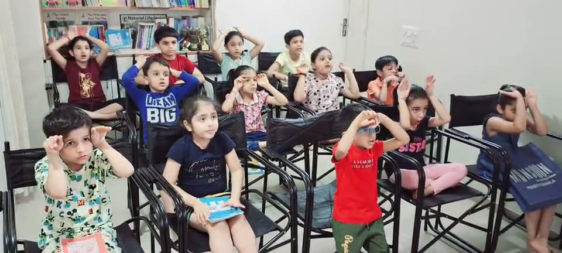
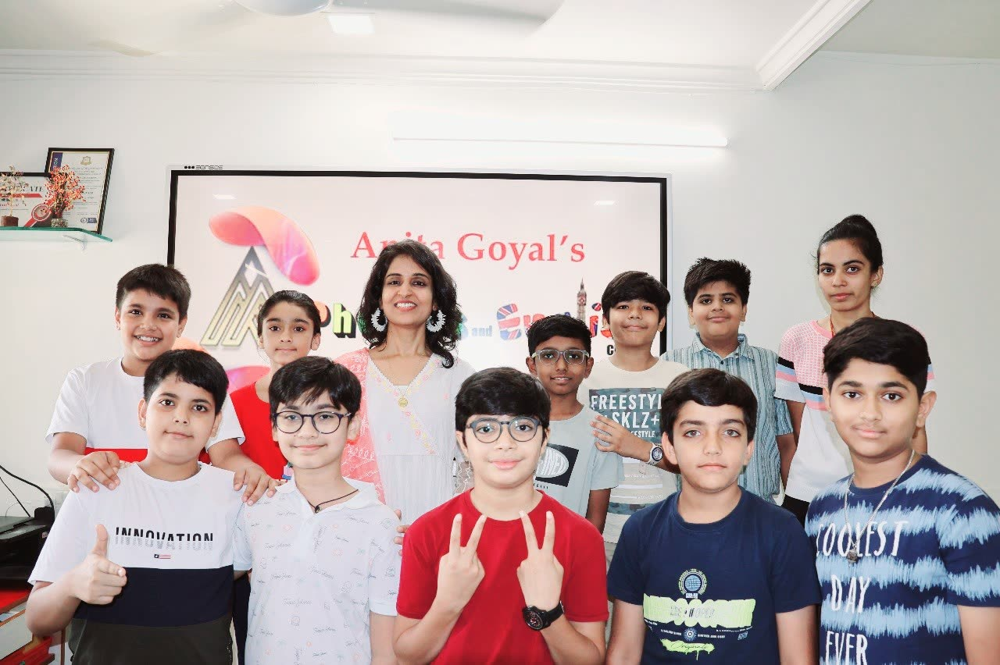
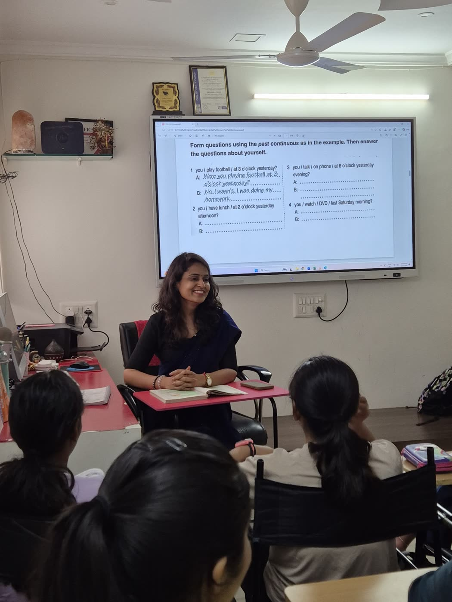
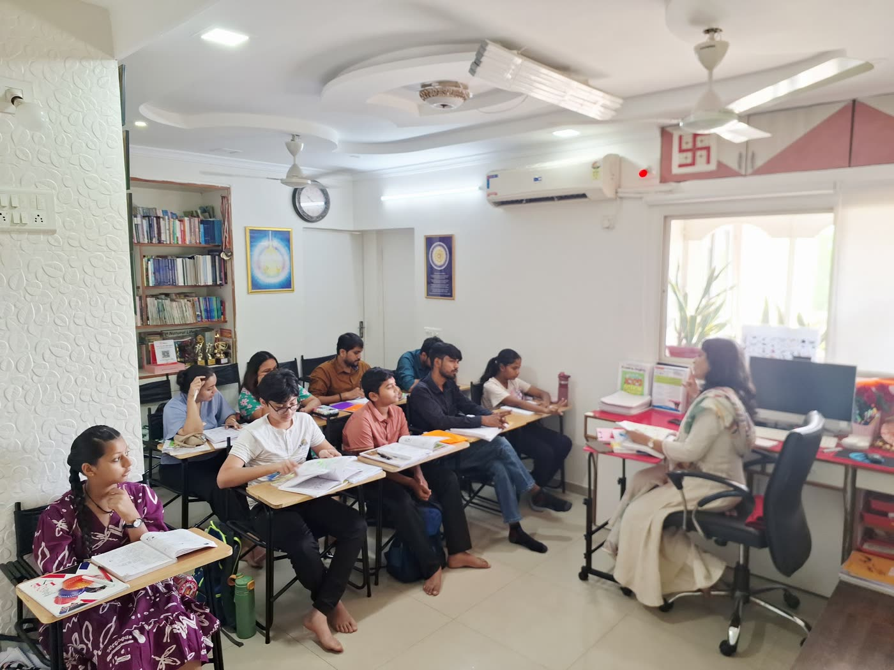
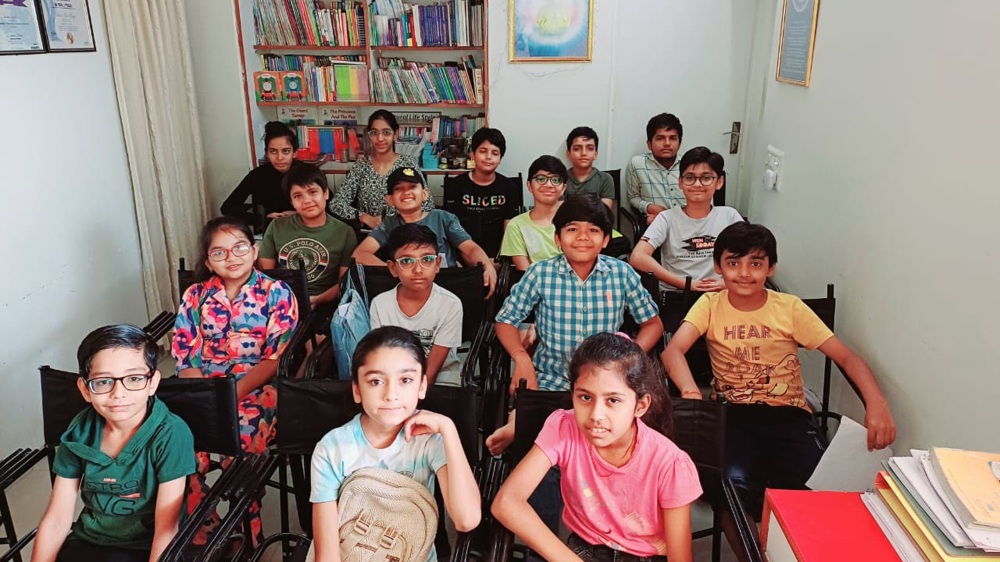
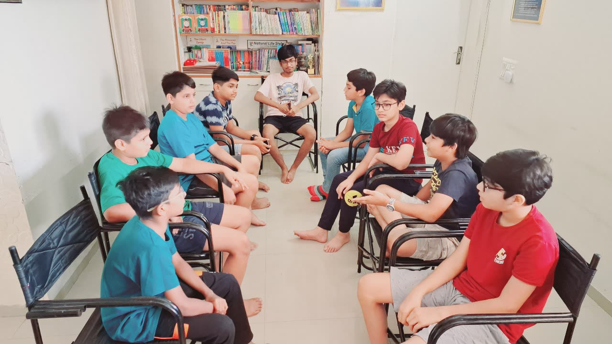
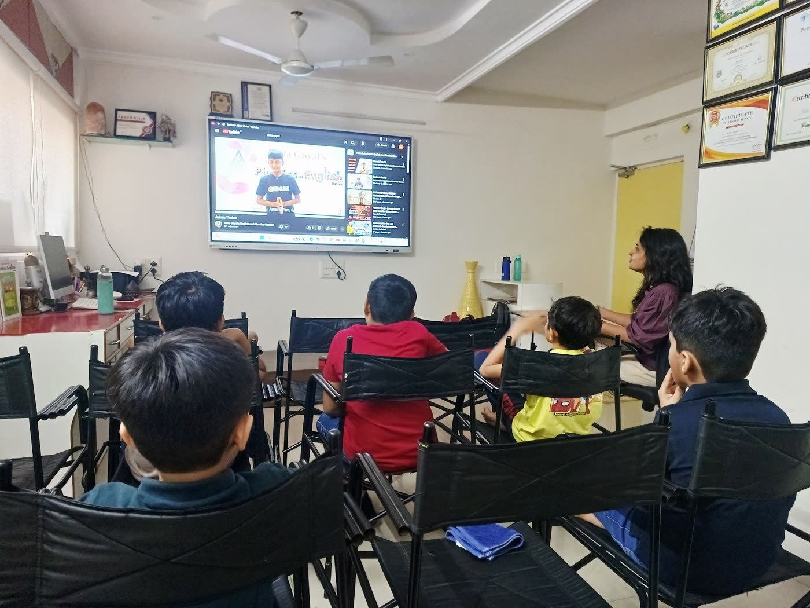
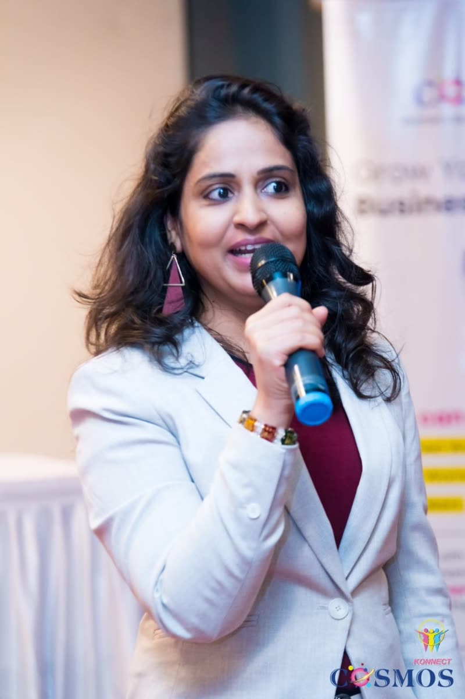
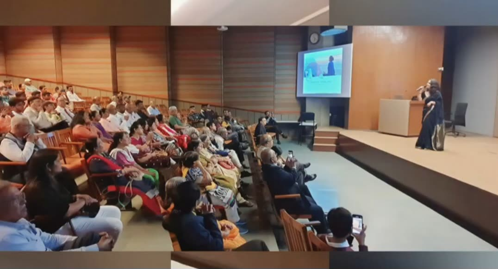

“My 5-year-old was struggling with letter sounds and simple blending, but within just a few weeks he started reading storybooks on his own.”
Karn A. · ParentSINCE 2000Phonics, Spoken English & Grammar Classes in Vastrapur, Ahmedabad
Confident readers. Fearless speakers.
UK-certified Jolly Phonics for little ones, spoken English and stage confidence for school kids, grammar for every board, and public speaking for adults. Small offline batches near Vastrapur Lake, personally mentored by Anita Goyal for over 25 years.
5.0★ · 290 Google reviews5,000+ learnersAges 3.5 to adults

Certificate dayTwo more confident young readers
5.0
★★★★★
290 Google reviewsUKcertified phonics
25+years teaching in Ahmedabad
5,000+learners helped
5.0★from 290 Google reviews
42letter sounds, the Jolly Phonics way
Courses & programs
How old is your learner?
Every program runs in small offline batches at the Vastrapur centre, opposite Vastrapur Lake. Pick an age to see what they'll learn.

Jolly PhonicsSynthetic Phonics & Early Reading · Ages 3.5–7
From letter sounds to storybooks
The Jolly Phonics method takes little ones from recognising sounds to reading books on their own, without memorising.
- All 42 letter sounds, actions and formations
- Sound blending and segmenting for spelling
- Sight words, tricky words and clear pronunciation
- Step-by-step reading confidence
Evening & weekend batchesSmall groupsFree reading assessment
Ask about this batch
Public speakingSpoken English & Stage Confidence · Ages 7–14
Speak up, stand out, lead
For children who understand English but hesitate to speak in class or in front of guests.
- Impromptu speaking and storytelling
- Role-plays, debates and situational dialogues
- Eye contact, body language and voice on the mic
- Elocution and presentation practice
Daily mic practiceStage activitiesSmall batches
Ask about this batch
All boardsSchool Grammar & Creative Writing · Grades 1–10
Grammar made logical
Grammar for better marks in CBSE, ICSE and GSEB English, and writing that's clear and confident.
- Tenses, parts of speech, subject-verb agreement
- Active–passive voice, direct–indirect speech
- Sentence framing and error correction
- Essays, letters and paragraphs
CBSE · ICSE · GSEBWeekday & weekend batches
Ask about this batch
Morning batchesAdult Spoken English & Public Speaking
Fluent, confident, on any stage
An 18-point course with daily stage practice and group discussions, for students, graduates, professionals and homemakers.
- Daily stage and mic practice
- Group discussions and debates
- Vocabulary, grammar and pronunciation
- Overcome hesitation for good
7:30–9 AM9–10:30 AM18-point course
Ask about this batchHow phonics works
Sound it out. Read it yourself.
Children who memorise words by shape get stuck as books get harder. Synthetic phonics teaches how English words are built, so a child can read words they've never seen. Try it below.
Tap a word, then watch the sounds blend.
1
Learn the 42 sounds
Each sound with an action and the right way to write it.
2
Blend
Push sounds together to read new words.
3
Segment
Break words into sounds to spell them right.
4
Read on your own
Tricky words and fluency until storybooks feel easy.
Inside the classroom
A real class, on a real day.
Phonics actions, reading drills, group discussions and smart-board lessons at the Vastrapur centre. No stock photos, just our students.



Student speakers
Hear them speak. In English.
Children and adults from our batches, speaking on camera in front of the class. Pick a speaker, turn the sound on.
Student speechSpoken English batch · Sep 2026


Also a speakeron big stages
Meet the founder
Anita Goyal, UK-certified phonics expert
Anita Ma'am started her classes in Vastrapur in 2000 and has since helped more than 5,000 children and adults read and speak English with confidence.
She teaches with Amit Sir. Parents often mention the same things: patience, warmth, and a classroom where even the quietest child starts speaking up. Outside the classroom, she speaks to large audiences on stage, the same confidence she builds in her students.
2000Teaching since
5,000+Learners
290Google reviews
Why families choose us
Small batches. Big confidence.
Parents from across Ahmedabad West have trusted the classes for a quarter of a century.
🎤
Mic & stage every day
Daily speaking practice on the mic and stage is how shyness goes away.
👩🏫
Personal attention
Limited seats per batch, so every child gets feedback and speaking time.
📖
Free level assessment
Find your child's current reading level before choosing a batch.
🎬
Learning beyond books
Movie time, potluck parties and certificate days keep children excited to come back.
Wall of fame
Every course ends with a certificate.
Certificate days are a big deal here. Each child goes up on stage, gets their certificate from Anita Ma'am, and takes home proof of how far they've come.
Offer on Google · till 23 Nov
Ask about the offer
Flat ₹2,000 off the combined course.
One all-in-one program that brings every skill together for complete fluency.
- Public speaking
- English speaking
- Phonics
- Grammar & vocabulary
Video testimonials
In their own words.
Parents and students from our batches talk about their experience. Tap any video to play it with sound.
▶ Video review
Family testimonial2:25 · Jan 2024
▶ Video review
Family testimonial0:58 · Jan 2024
▶ Video review
Family testimonial1:41 · Oct 2024
▶ Video review
Family testimonial1:35 · Oct 2024
▶ Video review
Family testimonial0:32 · Jan 2024
▶ Video review
Family testimonial1:19 · Oct 2024
▶ Video review
Family testimonial1:10 · Oct 2024
▶ Video review
Family testimonial0:32 · Jan 2024
Real results
Parents noticed the difference.
Straight from Google reviews by parents and students.
“My 6-year-old was struggling with spellings and blends. After joining Anita Ma'am's batch, his reading speed and pronunciation improved tremendously.”
Shivam M. · Parent“My daughter used to be very quiet. The everyday mic practice and stage activities gave her real confidence to speak clearly without hesitation.”
Shital G. · Parent5.0Read all reviews on Google
★★★★★
290 Google reviews · 4.9 on Justdial · 100% recommend on Facebook★★★★★“The supportive environment encourages students to speak on stage without fear. Thank you, Anita Ma'am and Amit Sir, for your dedication, guidance and constant encouragement.”
Kapil T. · Parent
★★★★★“She has developed a genuine interest in reading and now actively tries to read books, labels, signboards and words she comes across in daily life.”
Sweta S. · Parent
★★★★★“Her teaching methods are practical, interactive and easy to understand. She helps students build confidence in speaking before an audience.”
Tilak V. · Spoken English student
★★★★★“The daily stage time, group discussions and friendly guidance made a massive difference in my communication. I can speak without fear now.”
Mahesh J. · Adult student
★★★★★“The regular stage practice and interactive activities completely removed their shyness. They now read fluently and speak up with so much confidence.”
Purvi A. · Parent
★★★★★“Very warm atmosphere and individual attention for every child. It's amazing to see my kid improve a lot.”
Shivam M. · Parent
Batches
Pick a time that works.
Kids
Evenings & weekends
Phonics, spoken English and grammar batches after school and on weekends.
Adults
Mornings
7:30–9 AM and 9–10:30 AM for students, graduates, professionals and homemakers.
Admissions
New batches open
Seats are limited per batch. WhatsApp to check timings and reserve a seat.
FAQ
Questions parents ask
From what age can my child join?
Phonics starts from age 3.5. Spoken English and stage confidence batches are for ages 7 to 14, and grammar covers Grades 1 to 10.
Is there a free assessment?
Yes. Book a free reading-level assessment at the Vastrapur centre so we can suggest the right batch.
Which school boards do you cover?
CBSE, ICSE and GSEB English grammar and writing.
Are classes online or offline?
Offline, at Chinmay Crystal Tower opposite Vastrapur Lake, close to Bodakdev, Satellite, Thaltej and Gurukul.
Do you teach adults?
Yes. Morning batches of spoken English and public speaking are open to students, graduates, professionals and homemakers.
How soon will we see progress?
Every child learns at their own pace. Many parents in our reviews noticed a clear change in reading and confidence within a few weeks.
Visit the centre
Opposite Vastrapur Lake.
Phonics, spoken English, grammar and public speaking classes in Vastrapur, Ahmedabad, an easy drive from Bodakdev, Satellite, Thaltej, Gurukul, Navrangpura, Prahlad Nagar and Bopal.
- Address
- A/301, Chinmay Crystal Tower, Opp. Vastrapur Lake, Main Road, Vastrapur, Ahmedabad, Gujarat 380015
- Phone / WhatsApp
- +91 91691 66130
- Hours
- Mon–Fri 7 AM – 11 PM · Sat–Sun 9 AM – 11 PM
VastrapurBodakdevSatelliteThaltejGurukulNavrangpuraPrahlad NagarBopal